SENG 474: Assignment 1 Report
Nathan Woloshyn
Preface
This document ended up being quite long in terms of pages, but most of it is figures or code cells. So it shouldn’t actually take very long to read over. I wasn’t sure whether to include code directly in the report, but I found it easier to speak on the experiments and results when I could refer to the code directly. I hope that’s okay. Feel free to skip over the code cells if you want to get to the results faster.
Part 1: Processing the data
The first step is to load the data into a pandas dataframe. The data is stored in a csv file, so we can use the read_csv function to load it into a dataframe. After this, we split the data into a training set and a test set. What fraction of the data is used for training and what fraction is used for testing is a hyperparameter that can be tuned. We choose a 75/25 split as our default, but will also analyze the results of other splits. We also specify a random seed for the sampling, so that we can reproduce the results of our experiments.
import pandas as pd
'''Reads the data from the csv file and returns a pandas dataframe.'''
def read_data():
df = pd.read_csv('./cleaned_adult.csv')
return df
'''Partitions the data into train and test sets, using a taking what
percentage of the data train / test on as input. Returns the train and test'''
def partition_data(df, train_size=0.75, random_state=99):
# Split the data into train and test sets. (0.75, 0.25) split.
train_df = df.sample(train_size, random_state)
test_df = df.drop(train_df.index)
return train_df, test_df
Part 2: Decision Trees
Part 2.1: No Pruning
In our first experiment we use the sklearn implementation of a decision tree classifier. We use the default parameters, which means that the tree is not pruned. We use test both entropy and Gini impurity as our criterion for splitting the tree. Using the code below we test every depth of tree from 1 to 100 using these two criteria. We use our default choice of 75/25 train/test split, giving all trees the same train/test split.
train, test = read_data.partition_data(read_data.read_data())
'''Test various depths, with entropy as the criterion,
store and plot the scores on both training and test sets using matplotlib'''
def test_entropy_depths():
best_depth = 0
best_score = 0
test_scores = []
training_scores = []
for i in range(1, 100):
eD = DecisionTreeClassifier(random_state=0, max_depth=i,
criterion="entropy").fit(train.drop(columns=['income']),
train['income'])
test_scores.append(eD.score(test.drop(columns=['income']), test['income']))
training_scores.append(eD.score(train.drop(columns=['income']), train['income']))
if eD.score(test.drop(columns=['income']), test['income']) > best_score:
best_score = eD.score(test.drop(columns=['income']), test['income'])
best_depth = i
plt.plot(range(1, 100), test_scores, label='Test')
plt.plot(range(1, 100), training_scores, label='Training')
plt.plot(best_depth, best_score, 'ro', label='Best score: '
+ "{:.4f}".format(best_score) + ' at depth: ' + str(best_depth))
plt.legend(loc="lower right")
plt.xlabel('Depth')
plt.ylabel('Score')
plt.title('Entropy, no pruning')
#plt.show()
plt.savefig('entropy_no_pruning_scores_varying_depth.png')
plt.clf()
'''Test various depths, with gini as the criterion,
store and plot the scores on both the training and test sets using matplotlib'''
def test_gini_depths():
best_depth = 0
best_score = 0
test_scores = []
training_scores = []
for i in range(1, 100):
gD = DecisionTreeClassifier(random_state=0, max_depth=i,
criterion="gini").fit(train.drop(columns=['income']), train['income'])
test_scores.append(gD.score(test.drop(columns=['income']), test['income']))
training_scores.append(gD.score(train.drop(columns=['income']), train['income']))
if gD.score(test.drop(columns=['income']), test['income']) > best_score:
best_score = gD.score(test.drop(columns=['income']), test['income'])
best_depth = i
plt.plot(range(1, 100), test_scores, label='Test')
plt.plot(range(1, 100), training_scores, label='Training')
plt.plot(best_depth, best_score, 'ro', label='Best score: '
+ "{:.4f}".format(best_score) + ' at depth: ' + str(best_depth))
plt.legend(loc="lower right")
plt.xlabel('Depth')
plt.ylabel('Score')
plt.title('Gini, no pruning')
#plt.show()
plt.savefig('gini_no_pruning_scores_varying_depth.png')
plt.clf()
test_entropy_depths()
test_gini_depths()Running the code above gives us the following results:
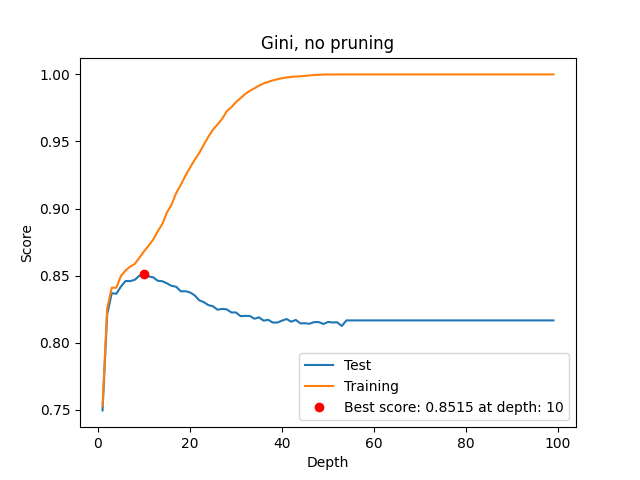
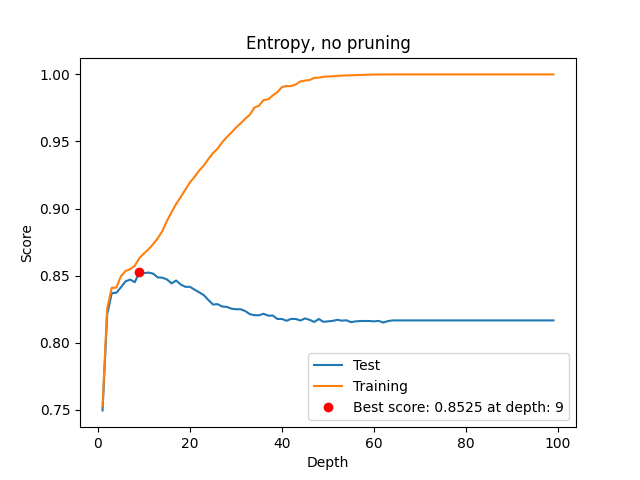
We can see that at low depth accuracy quickly grows as we allow a tree to make more splits, but around depth = 10 the models performance quickly declines. This is likely due to overfitting, as we can see that as depth increases the training accuracy continues to increase, but the test accuracy starts to decrease. This is a sign that the model is overfitting to the training data, and is not generalizing well to the test data. This is a common problem with decision trees, and why we will be using pruning in our next experiment. Overall, the two choices of criterion, entropy and Gini impurity, seem to perform similarly, with the best score being around 0.85 for both, and both having a best depth of around 10.
Next we test the effect of varying what percentage of the data we allocate to training and test, using the same depth of 10 for the tree. We use the code below to test the effect of varying the train/test split from 0% to 100% in 1% increments.
'''Test various training set sizes, with entropy as the criterion, using depth = 10'''
def test_entropy_sizes():
best_size = 0
best_score = 0
test_scores = []
training_scores = []
for i in range(1, 100):
train, test = read_data.partition_data(read_data.read_data(), train_size=i/100)
eS = DecisionTreeClassifier(random_state=0, max_depth=10,
criterion="entropy").fit(train.drop(columns=['income']), train['income'])
test_scores.append(eS.score(test.drop(columns=['income']), test['income']))
training_scores.append(eS.score(train.drop(columns=['income']), train['income']))
if eS.score(test.drop(columns=['income']), test['income']) > best_score:
best_score = eS.score(test.drop(columns=['income']), test['income'])
best_size = i
plt.plot(range(1, 100), test_scores, label='Test')
plt.plot(range(1, 100), training_scores, label='Training')
plt.plot(best_size, best_score, 'ro', label='Best score: '
+ "{:.4f}".format(best_score) + ' at size: ' + str(best_size))
plt.legend(loc="lower right")
plt.xlabel('Size')
plt.ylabel('Score')
plt.title('Entropy, no pruning')
#plt.show()
plt.savefig('entropy_no_pruning_scores_varying_size.png')
plt.clf()
'''Test various training set sizes, with gini as the criterion, using depth = 10'''
def test_gini_sizes():
best_size = 0
best_score = 0
test_scores = []
training_scores = []
for i in range(1, 100):
train, test = read_data.partition_data(read_data.read_data(), train_size=i/100)
gS = DecisionTreeClassifier(random_state=0, max_depth=10,
criterion="gini").fit(train.drop(columns=['income']), train['income'])
test_scores.append(gS.score(test.drop(columns=['income']), test['income']))
training_scores.append(gS.score(train.drop(columns=['income']), train['income']))
if gS.score(test.drop(columns=['income']), test['income']) > best_score:
best_score = gS.score(test.drop(columns=['income']), test['income'])
best_size = i
plt.plot(range(1, 100), test_scores, label='Test')
plt.plot(range(1, 100), training_scores, label='Training')
plt.plot(best_size, best_score, 'ro', label='Best score: '
+ "{:.4f}".format(best_score) + ' at size: ' + str(best_size))
plt.legend(loc="lower right")
plt.xlabel('Size')
plt.ylabel('Score')
plt.title('Gini, no pruning')
#plt.show()
plt.savefig('gini_no_pruning_scores_varying_size.png')
plt.clf()
test_entropy_sizes()
test_gini_sizes()Running the code above gives us the following results:
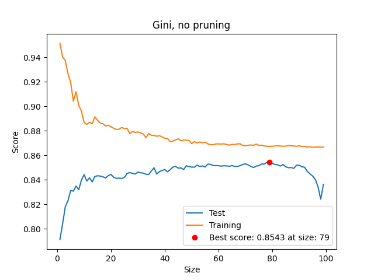
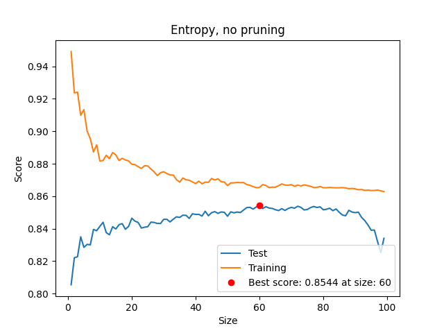
We can see that the accuracy of of the model is sensitive to how we partition our data. As we increase the size of the training set, the accuracy of the model increases, but at some point the accuracy the returns become diminishing, and eventually the test set is so small that the model is not able to generalize well. However, unlike the last experiment, there seems to be meaningfully different behavior from our two criteria. We were surprised by this, given the first experiment. So we ran several trials of this experiment, varying the random seed used to partition the data, and the results were consistent. The Gini criterion sees it’s best performance when around 80% of the data is allocated to training, while the entropy criterion consistently reaches peak performance when around 60% of the data is allocated to training.
Part 2.2: Pruning
Now we will introduce pruning to our decision trees. We will be performing similar experiments with varying depth and varying training set size, but this time we will be using the pruning parameter to control the depth of the tree. We will be using the same methodology as before, but with the addition of the pruning parameter. Similar to our previous experiment, we will test the effect varying the pruning parameter \[ \alpha \] through all possible values and observing the effect on the accuracy of the model. We will be using the entropy criterion for this experiment, and the same training set size of 75% for the data.
train, test = read_data.partition_data(read_data.read_data())
#create dt
dt = DecisionTreeClassifier(random_state=0, criterion="entropy").fit(train.drop(columns=['income']), train['income'])
#prune dt
path = dt.cost_complexity_pruning_path(train.drop(columns=['income']), train['income'])
ccp_alphas, impurities = path.ccp_alphas, path.impurities
depths = []
scores = []
i = 0
best_alpha = ccp_alphas[0]
best_score = 0
for ccp_alpha in ccp_alphas:
if i % 100 == 0:
print(i)
dt_pruned = DecisionTreeClassifier(random_state=0, criterion="entropy", ccp_alpha=ccp_alpha).fit(train.drop(columns=['income']), train['income'])
if dt_pruned.score(test.drop(columns=['income']), test['income']) > best_score:
best_score = dt_pruned.score(test.drop(columns=['income']), test['income'])
best_alpha = ccp_alpha
depths.append(dt_pruned.get_depth())
scores.append(dt_pruned.score(test.drop(columns=['income']), test['income']))
i+=1
'''Plot the scores on both the training and test sets using matplotlib from varying alpha values'''
def plot_alpha_scores():
plt.plot(ccp_alphas, scores, label='Scores')
plt.plot(best_alpha, best_score, 'ro', label='Best score: '
+ "{:.4f}".format(best_score) + ' at alpha: ' + str(best_alpha))
plt.legend(loc="upper right")
plt.xlabel('Alpha')
plt.ylabel('Score')
plt.title('Entropy, pruning')
plt.savefig('entropy_pruning_scores_varying_alpha.png')
plt.clf()
'''plot the depths as alpha varies'''
def plot_alpha_depths():
plt.plot(ccp_alphas, depths, label='Depth')
plt.legend(loc="upper right")
plt.xlabel('Alpha')
plt.ylabel('Depth')
plt.title('Entropy, pruning')
plt.savefig('entropy_pruning_depths_varying_alpha.png')
plt.clf()
plot_alpha_scores()
plot_alpha_depths()This code lets a decision tree grow to full depth, and then we collect all the possible cost complexity pruning paths and their alpha values. Then we create a tree with each value and measure its score on the test set, we also record the max depth of each such tree. We can see the results below:
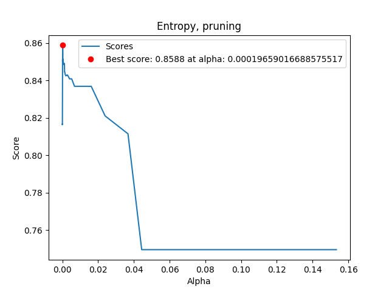
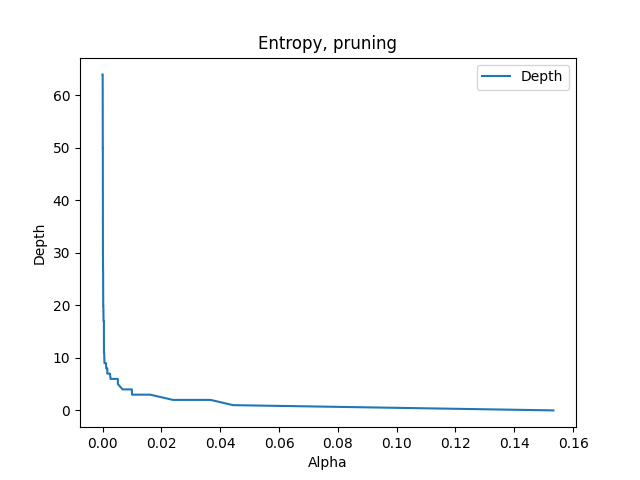
We can see that with a well chosen \(\alpha\) we get a small but noticeable improvement over our best score in the non pruning experiments (0.86 vs 0.85). A one percent improvement might seem very small, but considering that the classification rate is already somewhat high, the absolute number of errors lower by a factor of \(\frac{1}{15}\).
Part 3: Random Forests
One important parameter for a random forest is the maximum depth. Our first experiment will be to find an optimal value for this parameter. We will be using the recommended number of estimators, \(\sqrt{d}\), where \(d\) is the number of features. We will be testing both the entropy and gini criteria, and we will be using the same training set size of 75% for the data. By default SKL enables bootstrap sampling, so we will not be explicitly enabling it, and the default value of \(n' = n\) will be used, where \(n'\) is the number of samples in the bootstrap sample (with replacement) and \(n\) is the size of the original training set.
train, test = read_data.partition_data(read_data.read_data())
num_features = len(train.columns) - 1
num_estimators = int(np.floor(np.sqrt(num_features)))
'''Test various depths, with entropy as the criterion,
store and plot the scores on both training and test sets using matplotlib'''
def test_entropy_depths():
best_depth = 0
best_score = 0
test_scores = []
training_scores = []
for i in range(1, 30):
model = RandomForestClassifier(n_estimators=num_estimators,max_depth=i, random_state=0, criterion="entropy")
model.fit(train.drop(columns=['income']), train['income'])
test_scores.append(model.score(test.drop(columns=['income']), test['income']))
training_scores.append(model.score(train.drop(columns=['income']), train['income']))
if model.score(test.drop(columns=['income']), test['income']) > best_score:
best_score = model.score(test.drop(columns=['income']), test['income'])
best_depth = i
plt.plot(range(1, 30), test_scores, label='Test')
plt.plot(range(1, 30), training_scores, label='Training')
plt.plot(best_depth, best_score, 'ro', label='Best score: '
+ "{:.4f}".format(best_score) + ' at depth: ' + str(best_depth))
plt.legend(loc="best")
plt.xlabel('Depth')
plt.ylabel('Score')
plt.title('Entropy, no pruning')
#plt.show()
plt.savefig('rf_entropy_scores_varying_depth.png')
plt.clf()
'''Test various depths, with gini as the criterion'''
def test_gini_depths():
best_depth = 0
best_score = 0
test_scores = []
training_scores = []
for i in range(1, 30):
model = RandomForestClassifier(n_estimators=num_estimators,max_depth=i, random_state=0, criterion="gini")
model.fit(train.drop(columns=['income']), train['income'])
test_scores.append(model.score(test.drop(columns=['income']), test['income']))
training_scores.append(model.score(train.drop(columns=['income']), train['income']))
if model.score(test.drop(columns=['income']), test['income']) > best_score:
best_score = model.score(test.drop(columns=['income']), test['income'])
best_depth = i
plt.plot(range(1, 30), test_scores, label='Test')
plt.plot(range(1, 30), training_scores, label='Training')
plt.plot(best_depth, best_score, 'ro', label='Best score: '
+ "{:.4f}".format(best_score) + ' at depth: ' + str(best_depth))
plt.legend(loc="best")
plt.xlabel('Depth')
plt.ylabel('Score')
plt.title('Gini, no pruning')
#plt.show()
plt.savefig('rf_gini_scores_varying_depth.png')
plt.clf()
test_entropy_depths()
test_gini_depths()Running this code gives us the following results:
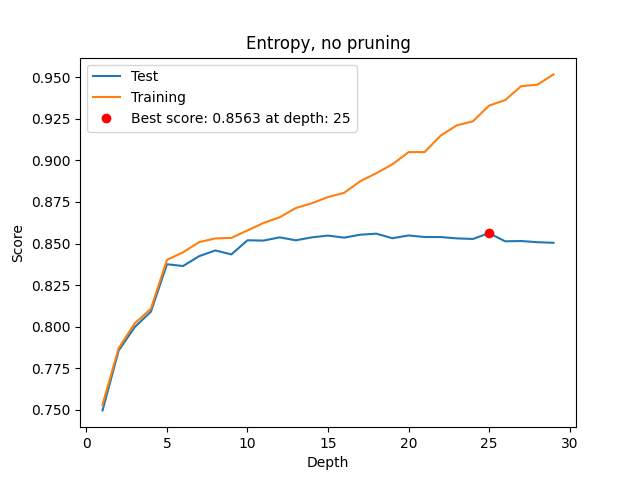
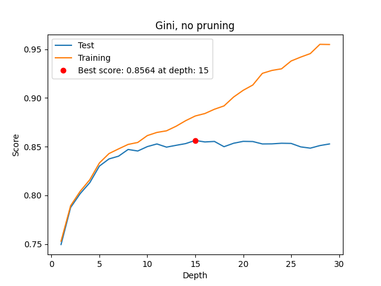
We can see that increasing depth is quite beneficial for both criteria, until about depth 10, where the test score stagnates. Again, there doesn’t seem to be significant difference between the two criteria, other than entropy hitting it’s best test score at a somewhat higher depth, but the absolute difference is not very large. We will be using a depth of 15, with a gini criterion, for the rest of the experiments.
In our next experiment we vary the number of estimators, using the gini criterion and a fixed max depth of 15, as well as the same training set size of 75%. We will be using the default value of \(n' = n\) for the bootstrap sample size.
'''test various number of estimators, with gini as the criterion, depth 15'''
def test_gini_estimators():
best_num_estimators = 0
best_score = 0
test_scores = []
training_scores = []
for i in range(1, 100):
model = RandomForestClassifier(n_estimators=i,max_depth=15, random_state=0, criterion="gini")
model.fit(train.drop(columns=['income']), train['income'])
test_scores.append(model.score(test.drop(columns=['income']), test['income']))
training_scores.append(model.score(train.drop(columns=['income']), train['income']))
if model.score(test.drop(columns=['income']), test['income']) > best_score:
best_score = model.score(test.drop(columns=['income']), test['income'])
best_num_estimators = i
plt.plot(range(1, 100), test_scores, label='Test')
plt.plot(range(1, 100), training_scores, label='Training')
plt.plot(best_num_estimators, best_score, 'ro', label='Best score: '
+ "{:.4f}".format(best_score) + ' at num estimators: ' + str(best_num_estimators))
plt.legend(loc="best")
plt.xlabel('Number of estimators')
plt.ylabel('Score')
plt.title('Gini, depth 15')
#plt.show()
plt.savefig('rf_gini_scores_varying_estimators.png')
plt.clf()
test_gini_estimators()Running this code gives us the following results:
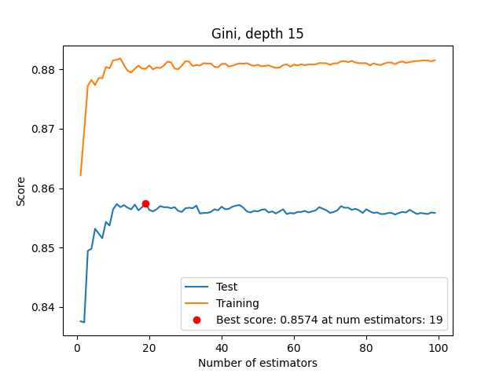
Once again we can see that the model struggles to make predictions when deprived of a resource, and performance quickly climbs as estimators are added. However, we also see performance plateau quite quickly at about 15 estimators. This somewhat aligns with the recommended value of \(\sqrt{d}\) estimators, considering that we have \(d \approx 1000\) and \(\sqrt{d} \approx 32\). Our next step is to test the effect of varying the bootstrap sample size, \(n'\), while keeping the number of estimators fixed at 19, and the depth fixed at 15.
We use the following code to test the effects of different bootstrap sample sizes:
'''test various bootstrap values, with gini as the criterion, depth 15, 19 estimators'''
def test_gini_bootstrap():
best_bootstrap = False
best_score = 0
test_scores = []
training_scores = []
for i in range(1,100):
model = RandomForestClassifier(n_estimators=19,max_depth=15, random_state=0, criterion="gini", bootstrap=True, max_samples=i/100)
model.fit(train.drop(columns=['income']), train['income'])
test_scores.append(model.score(test.drop(columns=['income']), test['income']))
training_scores.append(model.score(train.drop(columns=['income']), train['income']))
if model.score(test.drop(columns=['income']), test['income']) > best_score:
best_score = model.score(test.drop(columns=['income']), test['income'])
best_bootstrap = i
plt.plot(range(1,100), test_scores, label='Test')
plt.plot(range(1,100), training_scores, label='Training')
plt.plot(best_bootstrap, best_score, 'ro', label='Best score: '
+ "{:.4f}".format(best_score) + ' at bootstrap: ' + str(best_bootstrap))
plt.legend(loc="best")
plt.xlabel('Bootstrap')
plt.ylabel('Score')
plt.title('Gini, depth 15, 19 estimators')
#plt.show()
plt.savefig('rf_gini_scores_varying_bootstrap.png')
plt.clf()
test_gini_bootstrap()Running this code gives us the following results:
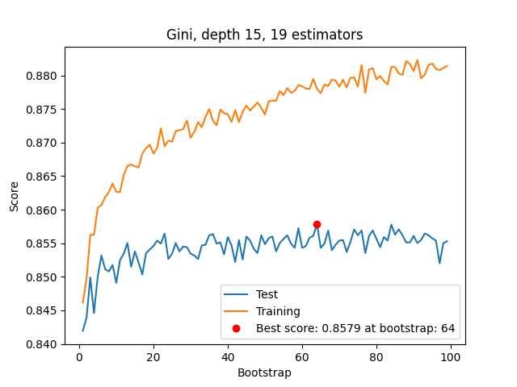
We can see that the performance on the test set quickly increases as we increase bootstrap size from very small values, but then the increase slows down and becomes quite noisy after about 25%. This is likely because we are using an ensemble, and as long as the bootstrap size is not unreasonably small we get diverse enough samples to broadly cover the space and ensure our ensemble has good coverage. This score of 0.86 on test is about the same as a single decision tree with properly tuned hyperparameters, so we can conclude that the ensemble is not adding much value here.
Part 4: Neural Networks
Pre Processing
First we use SKlearn’s StandardScaler to preprocess our inputs:
train, test = read_data.partition_data(read_data.read_data())
scaler = StandardScaler()
train, test = scaler.fit_transform(train), scaler.transform(test)
x_train, y_train = train[:, :-1], train[:, -1]
x_test, y_test = test[:, :-1], test[:, -1]
for i in range(len(y_train)):
if y_train[i] < 0:
y_train[i] = 0
else:
y_train[i] = 1
for i in range(len(y_test)):
if y_test[i] < 0:
y_test[i] = 0
else:
y_test[i] = 1So now our inputs are scaled to have mean 0 and standard deviation 1, and our outputs are either 0 or 1.
Model
We use the following code to create our neural network:
'''
Citation: https://towardsdatascience.com/pytorch-tabular-binary-classification-a0368da5bb89
provides the general structure for the definition of the BinaryClassification class
'''
class BinaryClassification(nn.Module):
def __init__(self, hdim=64, dropout=0.1):
super(BinaryClassification, self).__init__()
#input dim is 104 features
self.layer_1 = nn.Linear(104, hdim)
self.layer_2 = nn.Linear(hdim, hdim)
self.layer_out = nn.Linear(hdim, 1)
self.relu = nn.ReLU()
self.dropout = nn.Dropout(p=dropout)
self.batchnorm1 = nn.BatchNorm1d(hdim)
self.batchnorm2 = nn.BatchNorm1d(hdim)
def forward(self, inputs):
x = self.relu(self.layer_1(inputs))
x = self.batchnorm1(x)
x = self.relu(self.layer_2(x))
x = self.batchnorm2(x)
x = self.dropout(x)
x = self.layer_out(x)
return xWhere hdim is the width of the hidden layer, and dropout is the dropout rate. We use the following code to train the model:
def train_model(hdim=64, lr=1e-4, epochs=10, batch_size=10, dropout=0.1):
train_loader = DataLoader(dataset=train_data, batch_size=batch_size, shuffle=True, drop_last=True)
test_loader = DataLoader(dataset=test_data, batch_size=batch_size, drop_last=True)
device = torch.device("cuda:0" if torch.cuda.is_available() else "cpu")
print(device)
model = BinaryClassification(hdim=hdim, dropout=dropout)
model.to(device)
print(model)
criterion = nn.BCEWithLogitsLoss()
optimizer = optim.Adam(model.parameters(), lr=lr)
model.train()
for e in range(1, epochs+1):
epoch_loss = 0
epoch_acc = 0
for X_batch, y_batch in train_loader:
X_batch, y_batch = X_batch.to(device), y_batch.to(device)
optimizer.zero_grad()
y_pred = model(X_batch)
loss = criterion(y_pred, y_batch.unsqueeze(1))
acc = binary_acc(y_pred, y_batch.unsqueeze(1))
loss.backward()
optimizer.step()
epoch_loss += loss.item()
epoch_acc += acc.item()
#print(f'Epoch {e+0:03}: | Loss: {epoch_loss/len(train_loader):.5f} | Acc: {epoch_acc/len(train_loader):.3f}')
final_train_acc = epoch_acc/len(train_loader)
income_classification_list = []
model.eval()
with torch.no_grad():
for X_batch in test_loader:
X_batch = X_batch[0].to(device)
income_test_pred = model(X_batch)
income_test_pred = torch.sigmoid(income_test_pred)
income_pred_tag = torch.round(income_test_pred)
income_classification_list.append(income_pred_tag.cpu().numpy())
income_classification_list = [a.tolist() for a in income_classification_list]
income_classification_list = list(itertools.chain(*income_classification_list))
#print(income_classification_list)
#print(classification_report(y_test[:-6], income_classification_list))
final_test_acc = binary_acc(torch.FloatTensor(income_classification_list), torch.FloatTensor(y_test[:-(len(y_test) % batch_size)])).item()/len(y_test[:-(len(y_test) % batch_size)])
print("Final train accuracy: ", final_train_acc)
print("Final test accuracy: ", final_test_acc)
return final_train_acc, final_test_accExperiments
For our first experiment we vary our batch size:
def batch_size_test():
batch_size_list = [2,3,4,5,7,10, 20, 30, 40, 50, 60, 70, 80, 90, 100, 200, 400, 800]
train_acc_list = []
test_acc_list = []
best_test_acc = 0
best_batch_size = 0
for batch_size in batch_size_list:
final_train_acc, final_test_acc = train_model(epochs=2, batch_size=batch_size)
train_acc_list.append(final_train_acc)
test_acc_list.append(final_test_acc)
if final_test_acc > best_test_acc:
best_test_acc = final_test_acc
best_batch_size = batch_size
plt.plot(batch_size_list, train_acc_list, label="train accuracy")
plt.plot(batch_size_list, test_acc_list, label="test accuracy")
plt.plot(best_batch_size, best_test_acc, 'ro', label="best test accuracy: " +
"{:.4f}".format(best_test_acc) + " at batch size: " + str(best_batch_size))
plt.xlabel("batch size")
plt.ylabel("accuracy")
plt.legend(loc="best")
plt.savefig("nn_batch_size_test.png")And running it we get the following result:
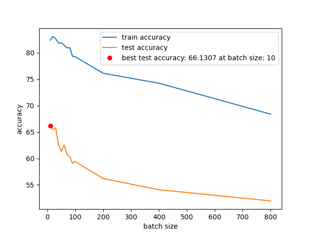
So we will fix the batch size at 4 in our next experiments.
Next we vary the size of the hidden layer:
def hdim_test():
hdim_list = [2,4,8,16,32,64,128,256,512,1024]
train_acc_list = []
test_acc_list = []
best_test_acc = 0
best_hdim = 0
for hdim in hdim_list:
final_train_acc, final_test_acc = train_model(epochs=1, hdim=hdim, batch_size=4)
train_acc_list.append(final_train_acc)
test_acc_list.append(final_test_acc)
if final_test_acc > best_test_acc:
best_test_acc = final_test_acc
best_hdim = hdim
plt.plot(hdim_list, train_acc_list, label="train accuracy")
plt.plot(hdim_list, test_acc_list, label="test accuracy")
plt.plot(best_hdim, best_test_acc, 'ro', label="best test accuracy: " +
"{:.4f}".format(best_test_acc) + " at hidden dimension: " + str(best_hdim))
plt.xlabel("hidden dimension")
plt.ylabel("accuracy")
plt.legend(loc="best")
plt.savefig("nn_hdim_test.png")
#plt.show()And running it we get the following result:
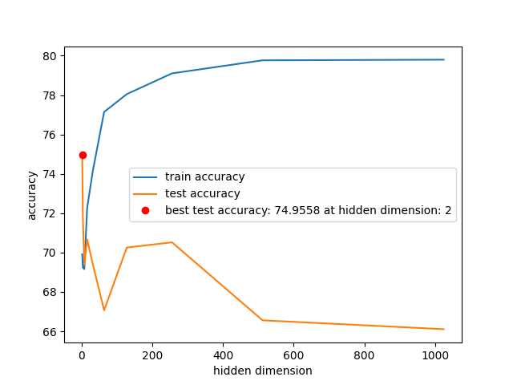
This is a pretty weird result! It seems that the best hidden dimension is 2. This is probably because the data is so simple that a single linear layer is enough to classify it.
Next we vary the learning rate:
def lr_test():
lr_list = [0.0001, 0.001, 0.01, 0.1, 1]
train_acc_list = []
test_acc_list = []
best_test_acc = 0
best_lr = 0
for lr in lr_list:
final_train_acc, final_test_acc = train_model(epochs=2, lr=lr, batch_size=4)
train_acc_list.append(final_train_acc)
test_acc_list.append(final_test_acc)
if final_test_acc > best_test_acc:
best_test_acc = final_test_acc
best_lr = lr
plt.plot(lr_list, train_acc_list, label="train accuracy")
plt.plot(lr_list, test_acc_list, label="test accuracy")
plt.plot(best_lr, best_test_acc, 'ro', label="best test accuracy: " +
"{:.4f}".format(best_test_acc) + " at learning rate: " + str(best_lr))
plt.xlabel("learning rate")
plt.ylabel("accuracy")
plt.legend(loc="best")
plt.savefig("nn_lr_test.png")
#plt.show()And running it we get the following result:
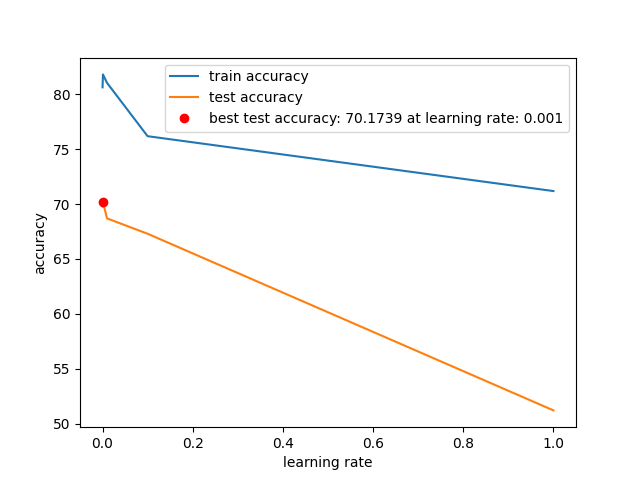
This one is kind of expected, the best learning rate is 0.001, going up is basically monotonically decreasing the accuracy, so the model is likely overshooting at higher learning rates.
Next we vary the dropout rate:
def dropout_test():
dropout_list = [0, 0.1, 0.2, 0.3, 0.4, 0.5]
train_acc_list = []
test_acc_list = []
best_test_acc = 0
best_dropout = 0
for dropout in dropout_list:
final_train_acc, final_test_acc = train_model(epochs=2, dropout=dropout, batch_size=4)
train_acc_list.append(final_train_acc)
test_acc_list.append(final_test_acc)
if final_test_acc > best_test_acc:
best_test_acc = final_test_acc
best_dropout = dropout
plt.plot(dropout_list, train_acc_list, label="train accuracy")
plt.plot(dropout_list, test_acc_list, label="test accuracy")
plt.plot(best_dropout, best_test_acc, 'ro', label="best test accuracy: " +
"{:.4f}".format(best_test_acc) + " at dropout: " + str(best_dropout))
plt.xlabel("dropout")
plt.ylabel("accuracy")
plt.legend(loc="best")
plt.savefig("nn_dropout_test.png")
#plt.show()And running it we get the following result:
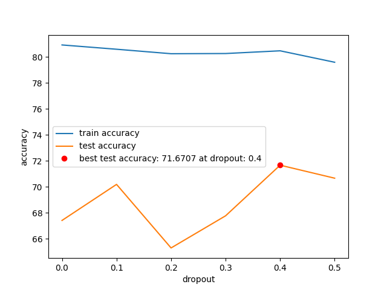
This is interesting, the best dropout rate is 0.4. Probably because we fixed the width of the hidden layer at 64, when we saw earlier that the best hidden dimension was 2. So the model is probably overfitting, and dropout is helping it generalize.
Next we vary the number of epochs:
def epoch_test():
epoch_list = [1,2,3,4,5,6,7,8,9,10]
train_acc_list = []
test_acc_list = []
best_test_acc = 0
best_epoch = 0
for epoch in epoch_list:
final_train_acc, final_test_acc = train_model(epochs=epoch, batch_size=4)
train_acc_list.append(final_train_acc)
test_acc_list.append(final_test_acc)
if final_test_acc > best_test_acc:
best_test_acc = final_test_acc
best_epoch = epoch
plt.plot(epoch_list, train_acc_list, label="train accuracy")
plt.plot(epoch_list, test_acc_list, label="test accuracy")
plt.plot(best_epoch, best_test_acc, 'ro', label="best test accuracy: " +
"{:.4f}".format(best_test_acc) + " at epoch: " + str(best_epoch))
plt.xlabel("epoch")
plt.ylabel("accuracy")
plt.legend(loc="best")
plt.savefig("nn_epoch_test.png")
#plt.show()And running it we get the following result:
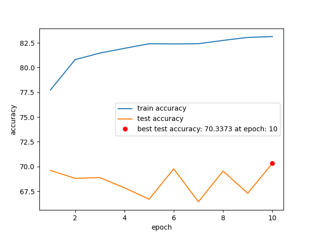
This is a little surprising. The best number of epochs is 10, which is unintuitive, since earlier we saw signs of overfitting, and more epochs should cause more overfitting.
Results
It seems like decision trees and random forests perform significantly better than neural networks on this data, as no combination of hyperparameters could get the neural network to perform better than the random forest or pruned decision tree. Between random forests and decision trees, performance is very similar, both achieving a best classification accuracy on test of about 0.86. This is likely because the data lends itself well to decision trees, and the random forest is just a more robust version of the decision tree. The data is tabular, and the encoding is one hot, this makes the logical splitting structure of decision trees much stronger than the neural network. A neural network would likely perform better on a more complex data set, such as images, where the data is not tabular and the encoding is not one hot. Though if the data set were sufficiently large, perhaps multiple orders of magnitude larger than this one, the neural network might be able to match or exceed the performance of the decision tree, as it can learn more complex relationships between the features and the target.
Another important consideration when thinking of applying these methods is training speed, and the ability to scale to larger data sets. The decision tree and random forest are both very fast to train, and can be trained on very large data sets. The neural network is much slower to train, and can only be trained on data sets that fit in memory. This is a very important consideration when thinking about applying machine learning to real world problems, as the data sets are often very large, and the training time must be reasonable. Running on my home computer with a relatively modern CPU and older GPU the training for neural networks of this size took about 10 minutes, while the decision tree and random forest took about 30 seconds. This is a huge difference, and made it more practical to carry out the hyperparameter search for the decision tree and random forest, as it was much faster to train the models.
Out of Bag Error estimate for Random Forests
Here I implement OOB error estimation for random forests. The code is quite long, so is separated into several functions.
First: we use the kindly provided demo to gather all the samples a certain estimator was not trained on:
def get_unsampled_indices(rf, n_samples, n_samples_bootstrap):
'''input:
- n_samples is the number of examples
- n_samples_bootstrap is the number of samples in each bootstrap sample
(this should be equal to n_samples)
- rf is a random forest, obtained via a call to
RandomForestClassifier(...) in scikit-learn
output:
unsampled_indices_for_all_trees is a list with one element for each tree
in the forest. In more detail, the j'th element is an array of the example
indices that were \emph{not} used in the training of j'th tree in the
forest. For examle, if the 1st tree in the forest was trained on a
bootstrap sample that was missing only the first and seventh training
examples (corresponding to indices 0 and 6), and if the last tree in the
forest was trained on a boostrap sample that was missing the second,
third, and sixth training examples (indices 1, 2, and 5), then
unsampled_indices_for_all_trees would begin like:
[array([0, 6]),
...
array([1, 2, 5])]
'''
unsampled_indices_for_all_trees= []
for estimator in rf.estimators_:
random_instance = check_random_state(estimator.random_state)
sample_indices = random_instance.randint(0, n_samples, n_samples_bootstrap)
sample_counts = np.bincount(sample_indices, minlength = n_samples)
unsampled_mask = sample_counts == 0
indices_range = np.arange(n_samples)
unsampled_indices = indices_range[unsampled_mask]
unsampled_indices_for_all_trees += [unsampled_indices]
return unsampled_indices_for_all_treesThen we find all the trees that weren’t trained on a particular sample:
def get_trees_not_trained_on_example(rf, n_samples, n_samples_bootstrap, example_index):
'''input:
- n_samples is the number of examples
- n_samples_bootstrap is the number of samples in each bootstrap sample
(this should be equal to n_samples)
- rf is a random forest, obtained via a call to
RandomForestClassifier(...) in scikit-learn
- example_index is an integer in the range [0, n_samples - 1]
output:
trees_not_trained_on_example is a list of the indices of the trees in the
forest that were \emph{not} trained on the example with index
example_index. For example, if the 1st tree in the forest was trained on a
bootstrap sample that was missing only the first and seventh training
examples (corresponding to indices 0 and 6), and if the last tree in the
forest was trained on a boostrap sample that was missing the second,
third, and sixth training examples (indices 1, 2, and 5), then
trees_not_trained_on_example would be [0, 9] (since the 1st and last trees
in the forest were not trained on the example with index 3).
'''
unsampled_indices_for_all_trees = get_unsampled_indices(rf, n_samples, n_samples_bootstrap)
trees_not_trained_on_example = []
for i in range(len(unsampled_indices_for_all_trees)):
if example_index in unsampled_indices_for_all_trees[i]:
trees_not_trained_on_example += [i]
return trees_not_trained_on_example
Then we get the average prediction of all estimators that weren’t trained on a particular sample:
def get_average_prediction(rf, n_samples, n_samples_bootstrap, example_index):
'''input:
- n_samples is the number of examples
- n_samples_bootstrap is the number of samples in each bootstrap sample
(this should be equal to n_samples)
- rf is a random forest, obtained via a call to
RandomForestClassifier(...) in scikit-learn
- example_index is an integer in the range [0, n_samples - 1]
output:
average_prediction is the average prediction of the trees in the forest
that were \emph{not} trained on the example with index example_index. For
example, if the 1st tree in the forest was trained on a bootstrap sample
that was missing only the first and seventh training examples (corresponding
to indices 0 and 6), and if the last tree in the forest was trained on a
boostrap sample that was missing the second, third, and sixth training
examples (indices 1, 2, and 5), then average_prediction would be the
average prediction of the 1st and last trees in the forest (since these are
the trees that were not trained on the example with index 3).
'''
print("Example index: ", example_index)
trees_not_trained_on_example = get_trees_not_trained_on_example(rf, n_samples, n_samples_bootstrap, example_index)
predictions = []
for i in trees_not_trained_on_example:
predictions += [rf.estimators_[i].predict(X[example_index].reshape(1, -1))[0]]
average_prediction = np.mean(predictions)
return average_predictionFinally, we can use this to get the OOB error:
def get_average_oob_error(rf, n_samples, n_samples_bootstrap):
'''input:
- n_samples is the number of examples
- n_samples_bootstrap is the number of samples in each bootstrap sample
(this should be equal to n_samples)
- rf is a random forest, obtained via a call to
RandomForestClassifier(...) in scikit-learn
output:
average_oob_error is the average out-of-bag error of the random forest.
'''
average_oob_error = 0
for i in range(n_samples):
average_oob_error += (get_average_prediction(rf, n_samples, n_samples_bootstrap, i) != Y[i])
average_oob_error /= n_samples
return average_oob_error
# print(get_average_oob_error(rf, n_samples, n_samples_bootstrap))
'''Function that plots the oob error for ensembles of different sizes'''
def plot_oob_error():
ensemble_sizes = [ 2, 5, 10, 20, 50, 100]
oob_errors = []
for i in ensemble_sizes:
rf = RandomForestClassifier(n_estimators = i, random_state=0)
rf.fit(X, Y)
oob_errors.append(get_average_oob_error(rf, n_samples, n_samples_bootstrap))
plt.plot(ensemble_sizes, oob_errors)
plt.xlabel('Ensemble Size')
plt.ylabel('Average OOB Error')
# plt.show()
plt.savefig('oob_error.png')
plot_oob_error()The output of this code is the following plot: